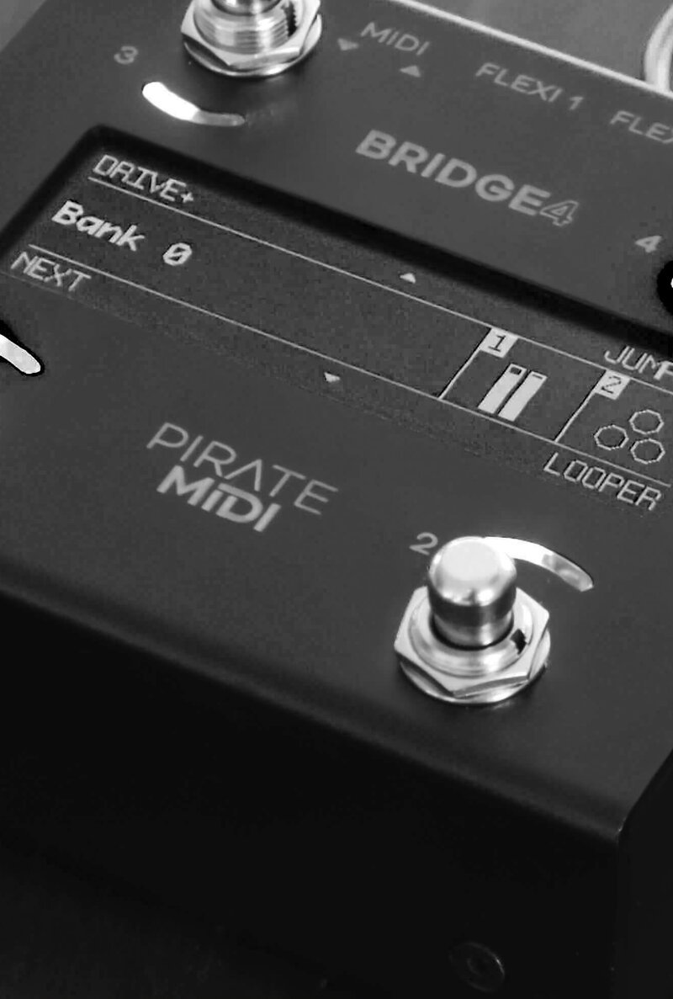
Bridge4
MIDI Controller
User Manual (v2.1.5)
Welcome
This device was created and designed to empower your creativity.
It is the result of many long nights and early mornings. It is born from the desire to bridge the gap between musician and instrument, and we want to say a huge thank you for your support. Our brand is built around a strong community and we hope you love your new MIDI controller as much as we do.
The PIRATE MIDI Team
Contents
Welcome
Bridge4 Overview
Technical Information
Hardware Layout
Quick Start
1. Device Interface
2. Power & Navigation
3. Overview of Connectors
4. Flexiports
5. MIDI In/Out/Thru
6. USB MIDI
7. Messages & Modes
8. Message Stacks
9. MIDI Clock
10. LFOs
11. Switch Out
12. Aux Switch In
13. Switch Groups
14. Interface - LEDs
15. Interface - Bank Names
16. Interface - UI Mode
17. Interface - Switch Labels
18. Bank Navigation
19. Other Global Settings
20. Resetting or Updating
21. MIDI Implementation
22. Support & Warranty
Bridge4 Overview
The Bridge4 is a 4-switch MIDI foot controller with RGB LEDs, an OLED screen, and a super tough aluminium enclosure. It’s made in New South Wales, Australia and was the result of a successful Kickstarter campaign in 2020. Now PIRATE MIDI builds and sells MIDI devices all over the world.
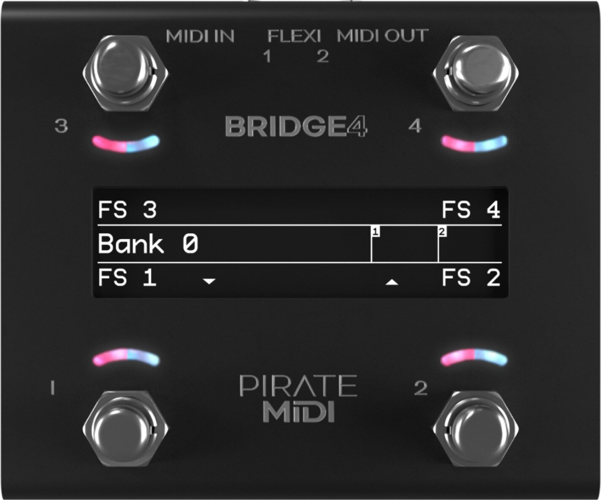
The Bridge4 can send stacks of MIDI messages through different footswitch press types (Press, Hold, Double-Press etc.) with 100 different bank of switches to scroll through. This means that the 400+ MIDI messages on each bank can be individually assigned across the whole device for a total of more than 40,000 unique messages and controls.
To help you connect to a wide variety of music gear, we’ve included two Flexiports of our own design. These ¼” (6.35mm) TRS jacks can be set to whatever mode best suits your setup. From expression pedals to beat sync pulse to switch emulation, you can use this MIDI controller to control devices that don’t even have MIDI!
With all settings available to easily edit using the onboard display and menus as well as with the web editor, we hope you’ll agree that this is perfect for performing live or playing at home.
Technical Information
Dimensions
Metric (112x94x63 mm)
Imperial (4.4”x 3.7”x 2.5”)
Weight
Metric (335g)
Imperial (11.8 oz.)
Display
OLED (3.2”)
Power Requirement
9v DC or USB (200mA)
Box Contents
- 1x Bridge4 MIDI Foot Controller
- 1x USB Cable
- 4x Self-Adhesive Rubber Feet
LINKS TO DOWNLOADS:
https://learn.piratemidi.com
It’s important that firmware updates are installed when they are available. Old firmware may not be supported by the web editor.
Firmware updates are released frequently and offer new features, bug fixes and other improvements.
User manuals are updated for each firmware update according to new features and changes.
Hardware Layout
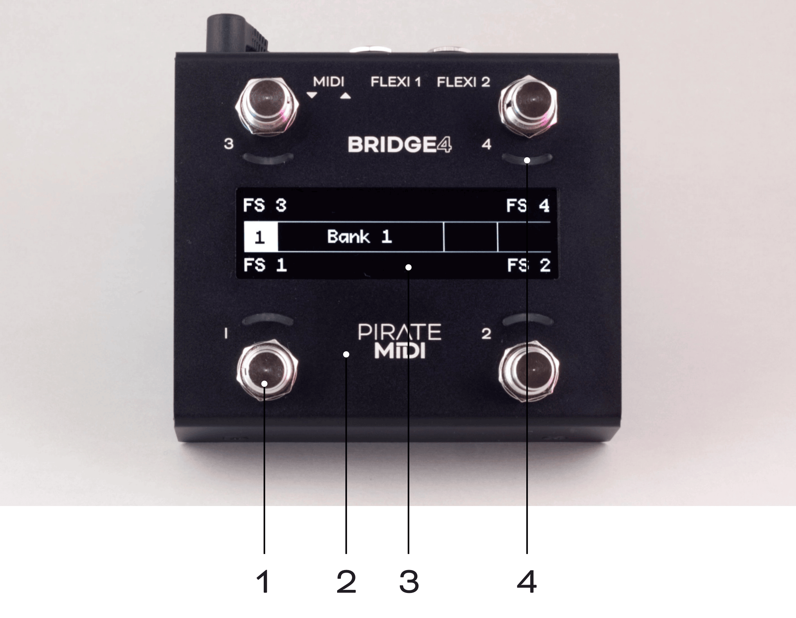
1
4 soft-touch footswitches. No clicking. Work with multiple press types (double-press, hold, etc).
2
Heavy-duty aluminium enclosure with black anodising. Scratch-resistant and no flex.
3
Bright, crisp, and easy to read OLED graphical display. Menus, icons, scribble strips are all a breeze on this beautiful display
4
8 RGB LEDs which you can assign to any colour you like for any function you like. Flashing, solid, dim etc.
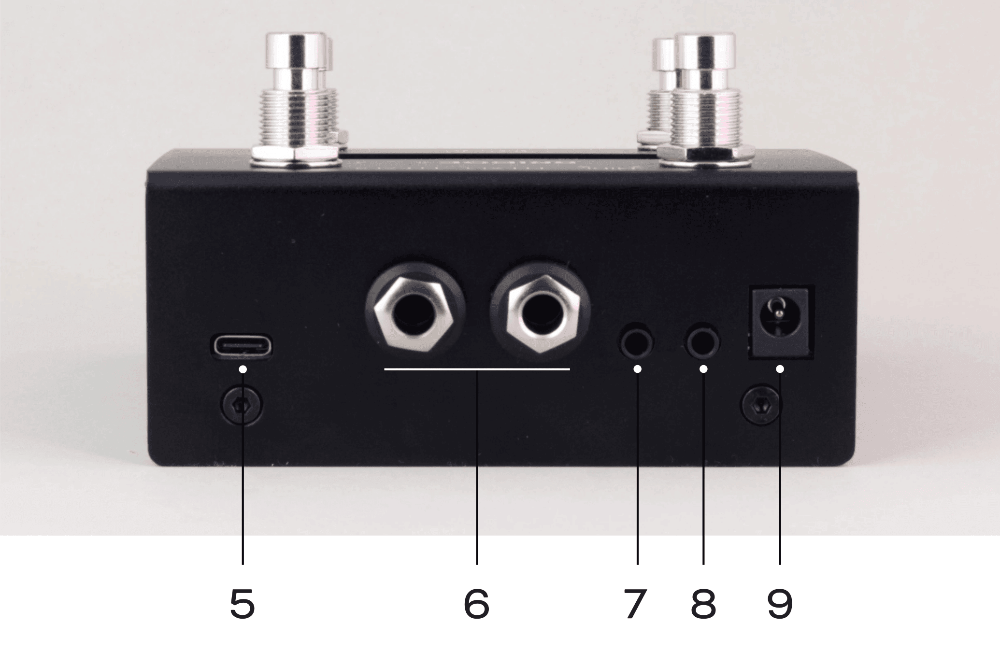
5
USB type C for USB MIDI, using the web editor, and powering the device.
6
Flexiports 1 and 2. Multi-function ¼” (6.35mm) TRS jacks which can be used in a number of different modes.
7
Dedicated 3.5mm TRS MIDI Out conforming to the MIDI.org specification (Type A).
8
Dedicated 3.5mm TRS MIDI In conforming to the MIDI.org specification (Type A).
9
2.1mm 9v DC barrel jack - as standard on most effects pedals and power supplies.
Quick Start
1. Bank Up/Down
To go to the next bank, press switch 3 and switch 4 together.
To go to the previous bank, press switch 1 and switch 2 together.
These can be customised or turned off (See chapter 18).
2. Entering the Menu
To enter the onboard menu, hold switch 1 and switch 3 simultaneously.
All settings can be changed with onboard menus as well as the editor.
Hold switches 3 & 4 to exit the menu.
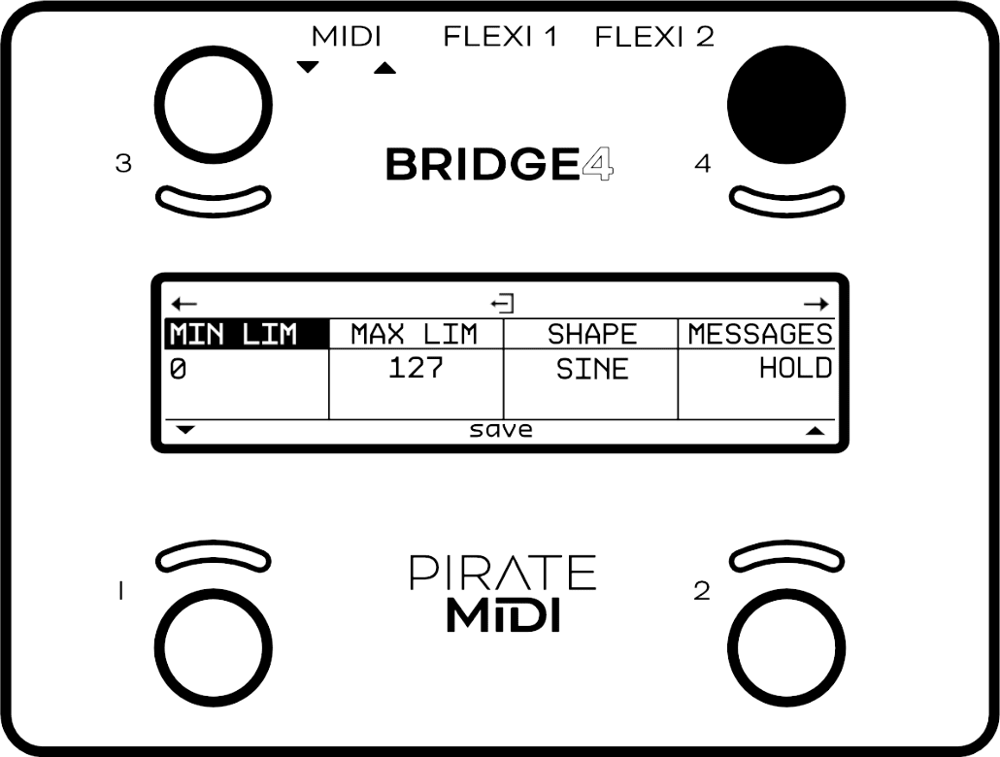
3. Don’t Miss the Rest!
Many menus and settings have a second or third page of settings. Always make sure you haven’t missed vital settings by scrolling to the right using switch 4 until you get back to the first position.
Move Left - FS3Exit/Back - FS 3&4Move Right - FS4
Down/Decr. - FS1Save/Edit - FS1&2Up/Incr. - FS2
4. General Navigation
- Icons under or above each switch will show you what function they will serve.
- Generally switch 3&4 is a “back” or “exit” button, and switch 1&2 is a “enter” or “select” button.
- Switches 1 & 2 are up/down or value-changing controls.
- Switches 3 & 4 are sideways navigation to go to the next parameter.
Check the MIDI outputs
When you create a message, make sure you scroll across to the second/third screen to check that the message is being sent to the correct MIDI outputs (Flexiport 1, Flexiport 2, TRS, or USB). All outputs are on by default, but if you’re having trouble sending messages, you should check the outputs. Read more in chapter 8.
Set Flexiport Mode Before Using Flexiports
Before you plug something into a Flexiport, make sure you set the Flexiport mode in
You won’t get the function you want unless you set the Flexiport mode. There is no mode set to the Flexiports by default - you must always set the mode.
Set Banking Program Change Outputs
By default, the BRIDGE will send Program Change (PC) MIDI messages out all 4 MIDI outputs when you change the bank (corresponding to the BRIDGE bank number). If you want to turn some/all outputs off, or change the MIDI channel that the PC are sent on, go to:
Switch Groups & Broadcast/Response Settings
When modifying switch group settings, the broadcast/response settings may seem overwhelming. If you leave the defaults unedited, the switch will behave in a simple “exclusive” mode where only one switch will be on at a time. If you want to learn what these powerful settings are capable of, read more in chapter 13.
Check that your BRIDGE4 firmware is up to date.
Updates are released periodically adding new features and bug fixes. Go to:
www.learn.piratemidi.com/downloads/firmware-updates
Warning: technical documentation enclosed.
Coffee required.
1. Device Interface
Footswitches
Four silent footswitches are the main interface on the Bridge4. Rated for over 100,000 presses each, they can send different MIDI message stacks for different press types (Toggle On, Toggle Off, Press, Release, Double Press, Hold, Hold Release etc).
Each switch can send many different messages, and can be configured differently on every bank:
- Toggle On: 16
- Toggle Off: 16
- Press: 8
- Release: 8
- Hold: 8
- Hold Release: 8
- Double Press: 8
- Secondary Toggle On: 8
- Secondary Toggle Off: 8
- Sequential Steps: 16
- Scrolling Messages: 16
OLED Display
A large graphical display allows us to display symbols and icons to make the user interface easier to use.
The beauty of an OLED is the crisp, high-contrast display. Easily readable from a distance with no need for an annoying backlight.
By default, the OLED shows the bank name in the centre, and each switch label is set to “FS ‘x”.
Switch labels and bank names are editable through the onboard menus, the web editor, and our API.
RGB LEDs
Each switch is paired with a curved light pipe that houses 2 independent RGB LEDs. This means you can choose from millions of colours per switch and combine different LED states/colours to create your own custom interface. Custom colours can be created on the device, in the web editor, or sent to the device with the API or MIDI commands.
2. Power & Navigation
Powering Your Bridge4
You can power your Bridge4 with either a USB cable, or a centre-negative 9v DC jack (2.1mm) commonly used for guitar pedals.
Switching Power Sources
The Bridge4 uses smart power switching so you can have both plugged in at once, and if you need to remove one or the other, the unit will seamlessly switch power sources without shutting down or restarting.
Power Requirement
If you’re using a 9v DC power supply, please make sure it can supply the required 200mA.
Basic Navigation
Bank Up & Bank Down
As indicated by the arrows at the bottom of the OLED screen, pressing switches 3 & 4 at the same time will advance to the next bank (Bank Up) and pressing switches 1 & 2 at the same time will go to the previous bank (Bank Down). This is indicated by the two arrows displayed on the screen (visible on below diagram). Holding down the bank change triggers will result in an automatic scroll through the banks. Bank scrolling accelerates the longer you hold the switches.
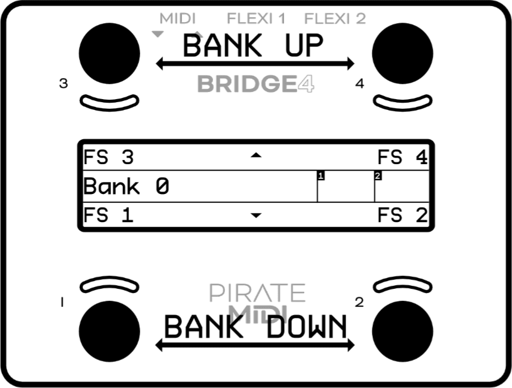
There are 100 banks (1-100). Banking up from bank 100 will return you to bank 1. Banking down from bank 1 will send you to bank 100. Banks can be counted from 0-99 or 1-100 using the global interface settings.
Opening the Menu
To enter the menu, press and hold down switches 1 & 3 simultaneously (as pictured below). You will know you’ve entered the menu when the screen layout changes.
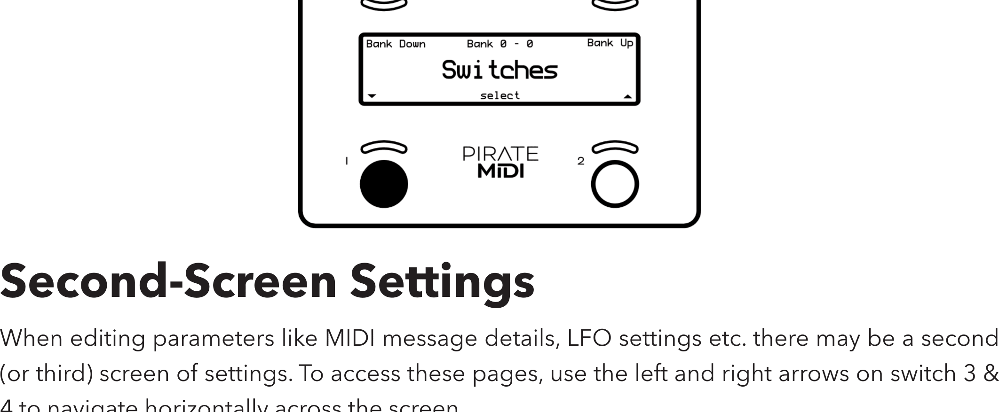
- Press switch 1 or switch 2 to navigate the menu (note the arrows on screen).
- Press switch 3 or 4 to change bank or navigate horizontally in the menu (note the arrows on the screen).
- Press switch 1&2 to select or set (like an ‘enter’ or ‘return’ key on a computer).
- Press switch 3&4 to ‘go back’ to the previous menu screen or exit the menu.
- Hold switch 3&4 on any menu screen to completely exit the menu.
Second-Screen Settings
When editing parameters like MIDI message details, LFO settings etc. there may be a second (or third) screen of settings. To access these pages, use the left and right arrows on switch 3 & 4 to navigate horizontally across the screen.
These pages are “circular” and navigating across in one direction will always bring you back to the place you started.
Ready to Rock
That’s the end of the basic navigation instructions. After this you should be able to figure out how to navigate all the menus and settings. You can watch the tutorial videos on our YouTube channel for a visual explanation.
3. Overview of Connectors
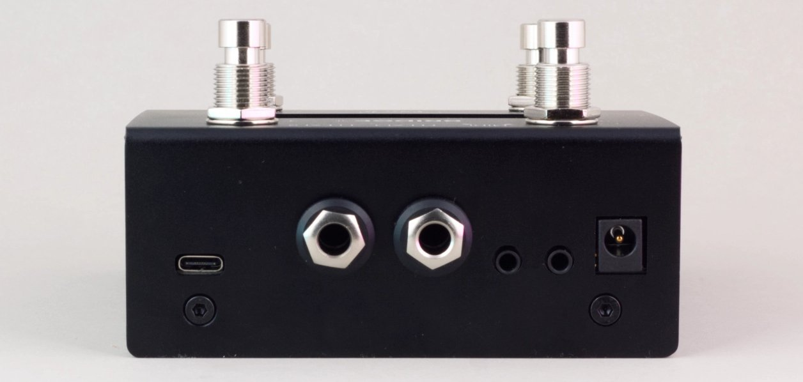
USB (type-C)
The Bridge4 can be powered by USB, and is also a class-compliant USB MIDI device. This means it will be recognised as a MIDI device without any drivers. Use it with your DAW, plugins, or music apps.
TRS MIDI In
A 3.5mm TRS Jack designated as a dedicated MIDI input. This Input conforms to the MIDI Specification (Type A).
TRS MIDI Out
A 3.5mm TRS Jack designated as a dedicated MIDI output. This Output conforms to the MIDI Specification (Type A) and can power CME WIDI products.
9v DC (centre-negative)
A 2.1mm centre-negative barrel jack (common with standard guitar pedal power supplies). Requires 200mA.
TRS Flexiports 1 & 2
¼” (6.35mm) TRS jacks with 12 modes:
- MIDI Out
- Type A
- Type B
- Tip Active
- Ring Active
- Device Link
- Exp-Doubler In
- Expression In
- Aux Switch In
- Switch Out
- MS Relay Out
- Tap Tempo Out
- Pulse Clock Out
The extreme flexibility of the Bridge4 is due partly to the two Flexiports we’ve included. The Flexiport is a multi-function TRS port that we’ve designed (and named) to give you a truly flexible experience with our devices.
Flexiports will be included in most PIRATE MIDI devices and will offer the same functionality across all devices. So, if you see the name Flexiport you know what it does.
4. Flexiports
Flexiport Modes Summary
Each Flexiport on the Bridge4 is a 6.35mm (¼”) TRS Jack. They have 12 modes that are assignable in the menu under
1. MIDI Out - Type A
(Can power CME WIDI devices. Type A is the MIDI TRS standard.)
2. MIDI Out - Type B
(As used by Arturia, Novation and others)
3. MIDI Out - Tip Active
(Empress, Alexander Pedals, Meris, Bondi Effects and more)
4. MIDI Out - Ring Active
(Chase Bliss Audio)
5. Device Link
(connect multiple PIRATE MIDI devices together)
6. Exp-Doubler In
(Enables two expression pedal inputs per Flexiport with our Exp-Doubler device)
7. Exp In
(Single TRS expression pedal input)
8. Aux Switch In
(1, 2, or 3 switch TRS aux switches supported - add more footswitches to your controller)
9. Switch Out
(Send TRS switch emulation to non-MIDI devices)
10. MS Relay
(Send TRS commands to your Morningstar Omniport Relay Interface)
11. Tap Tempo Out
(MIDI Clock as switch output)
12. Pulse Clock Out
(Send MIDI clock as a square wave to sync non-MIDI devices)
⚠️ FLEXIPORT WARNING!
Flexiports offer many operating modes. Not all of these modes are compatible with all external devices.
In particular, the Switch Out mode allows a Flexiport to emulate a TRS switch output. This is designed to control devices that have an auxiliary switch input or tap tempo footswitch jack where the device that is connected does not have more than 3.3 volts on the jack the Flexiport will connect to. This can be tested using a TRS patch cable and a multimeter.
Many devices use larger operating voltage and/or currents than the 3.3 volts that a Flexiport can handle. Please contact us to see if your device may be compatible with this mode if you are unsure.
A Flexiport can also be damaged when using an incorrect mode with an external device attached. Make sure that you have enabled the correct Flexiport mode BEFORE connecting an external device.
Ignoring these warnings may void your warranty. Please make sure to contact us if you’re unsure. Email support@piratemidi.com
MIDI Out
When set to ‘’MIDI Out’ mode, the Flexiport is a dedicated MIDI TRS Output. There are 4 MIDI Out modes: Type A, Type B, Tip Active, & Ring Active. You can choose the MIDI Out mode in the Global settings menu:
TRS A is the standard MIDI specification for TRS MIDI. It uses the ‘Tip’ to send MIDI. However, because MIDI over TRS was introduced before the specification was decided, there are some brands that send on the ‘Ring.’ This is called TRS B.
Again, there are other brands who do not adhere to the specification and only use two pins, instead of three to send MIDI data. Brands such as Empress, Meris, Bondi Effects, Alexander Pedals, and Chase Bliss Audio use either Tip active or Ring active modes.
If you are unsure which pedals or devices use which mode, a quick google will probably answer your question. If you’re having trouble finding out, feel free to ask in our Facebook group which will get the fastest response, or you can ask us in an email to support@piratemidi.com
Once the Flexiport is in MIDI Out mode, any messages that have their MIDI set to be output to that Flexiport will be transmitted out that Flexiport when the messages are triggered.
Expression Pedal In
When set to ‘’Exp In” mode, the Flexiport will receive analog expression pedal input for easy conversion to MIDI. Set the Flexiport to “Exp In” mode in the Global settings menu:
You will now see the Expression Pedal Graph in the Extended UI for the Flexiport you have put in Exp In mode.
Please note that this is designed to work with TRS expression pedals only. TS Expression pedals will not work.
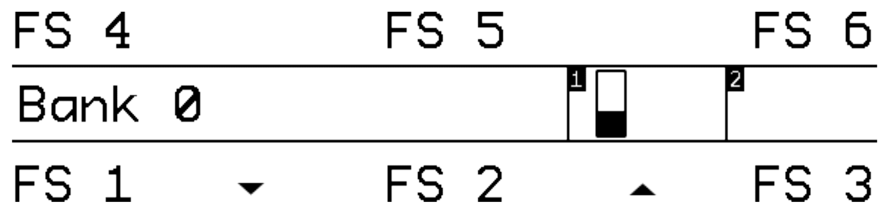
Expression Pedal Calibration
Expression pedals will sometimes not register their full range on different devices they connect to. Calibrating your expression pedal will make sure that toe-down is equal to the maximum MIDI value (127) and heel-down is equal to the minimum value (0).
Calibrate your expression pedal in the menu:
Follow the on-screen instructions to calibrate the pedal. The device will instruct you to put the pedal at the full toe-down position for 5 seconds, and then the heel-down position for 5 seconds.
Exp-Doubler In
When set to “Exp-Doubler In” mode, usage is the same as “Exp In” including calibration etc. but this mode can only be used with the PIRATE MIDI Exp-Doubler.
The Standard UI will now show two Expression Pedal Graphs as pictured below.
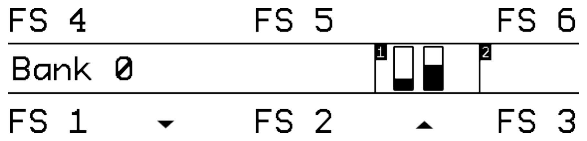
An expression pedal usually works with three contacts: Tip, Ring, and Sleeve. The Ring supplies power, the Sleeve is connected to ground, and the Tip transmits the position of the pedal.
Our Exp-Doubler supplies power to the Ring of your expression pedals which leaves an extra slot on the Flexiport for receiving the pedal position. Across two Flexiports this means up to 4 expression pedals can be used! Two per Flexiport. This is why Expression pedals are labelled as 1A and 1B, 2A and 2B.
Tap Tempo Output
When set to “Tap Tempo Output” mode, the Flexiport is a dedicated analog TRS output which sends switch impulses synced to the chosen MIDI clock (A or B). It can be put in Clock A or Clock B mode in the Global settings menu:
Now, connect a TRS cable from the Flexiport to the device you wish to send the tap tempo to, and you should see the tap tempo changing on your non-MIDI device.
Other devices that accept Tap Tempo Out include: MXR Carbon Copy Deluxe, BOSS DD-20 Gigadelay.
Aux Switch In
When set to ‘’Aux Switch” mode, the Flexiport will receive auxiliary switch input for extra footswitch controls. Set the Flexiport mode in the Global settings menu:
Single, double or triple auxiliary switches will work in this mode. Plug your aux switch into your Flexiport and then assign it a function or MIDI command:
(For global Aux messages)
(For bank-level Aux messages)
Using these menus, you will now be able to assign messages for up to 3 auxiliary switches (Tip, Ring, Tip+Ring). The available messages are Press, Hold, Toggle On, and Toggle Off.
These messages are available to configure individually for every bank, but also globally. This means that each switch can send 2 messages at once for press, toggles, and holds. All message types, including smart messages, can be assigned to Aux Switches.
When in Aux Switch mode, the Standard UI will show dynamic switch icons as pictured below. The centre of the circle will fill when a press is registered, and the circle will be filled completely when a switch hold is registered.
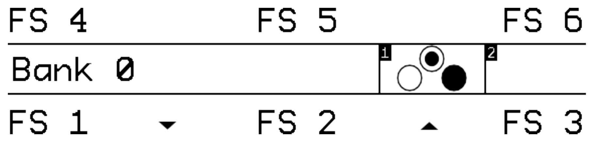
Switch Out
When set to ‘’Switch Out” mode, the Flexiport will act like an analog switch. This can be used to control functions on non-MIDI pedals that have a switch input like a tap tempo footswitch in or some other function. Set the Flexiport to ”Switch Out” mode in the Global settings menu:
Some devices that have a footswitch input are: BOSS MS-3, MXR Carbon Copy Deluxe, Line6 HX Stomp, BOSS DD-20 Gigadelay.
When in Switch Out mode, the Standard UI will show a dynamic tip & ring icon which will fill the tip, ring, or tip & ring when those commands are triggered.
Assigning ‘Switch Out’ Actions to a Footswitch
Once you have set the Flexiport mode, you can set any message on any press type as a Smart Message with “TRS Switch” function. Then choose which contacts to open, close or toggle, as the switch action that will be triggered by that Smart Message.
(See chapter 8 to learn about adding messages.)
MS Relay
Use this mode to send switch signal to the Morningstar Omniport Relay Interface device. Use the Smart Message “Relay Out” when this Flexiport mode is activated.
Pulse Clock Out
Use this mode to send MIDI clock as a beat sync pulse. This method of sync is used by brands like Teenage Engineering (Pocket Operator series), Korg (volca series) and others. Some devices use 2 pulses per quarter note, and some use 4 pulses per quarter note. There will be a future update to allow for changing the number of pulses.
Device Link
Device Link is not yet fully featured or implemented. Please wait for a future firmware update for more features.
When set to “Device Link” mode, the Flexiport acts as a high-speed communication port to link two PIRATE MIDI devices for transfer of MIDI messages and other commands. Activate Device Link mode in the menu:
Device Link can sync bank changes, bank names, merge switch groups to interact between devices, and stream MIDI from one device to the MIDI out of a different device.
Setting the Main/Satellite Roles
To choose which device will broadcast its bank name and act as the Main device, go to:
Device Link Settings
In the above-mentioned menu, there are currently 4 options after the Main/Satellite choice.
Bank Name
Temporarily overwrites the displayed bank name on the Satellite device with the bank name of the Main device when connected to the Device Link network. Note that the name is not replaced, and when disconnected the original bank names are retained on the satellite device.
Bank Navigation
Synchronise bank changes between devices. Similar to how a PC message would normally cause a bank change, but without using up message space.
MIDI Receive (RX)
MIDI messages are received via the high-speed device link connection, and output to the MIDI outputs as per the MIDI Thru Flexi1/2 routing set in the Global “MIDI Thru” menu. To send a message to the device link network, make sure the message’s outputs have the Flexiport set to “on”. If Device Link is through Flexiport 2, make sure the message outputs have Flexiport 2 set to “on.”
Footswitch Groups
Switch Groups are merged across the network. Members of group ‘x’ (e.g. 1) on all devices interact as if they’re in the same group. There is no consequence to disconnecting from the Device Link network. The switch group settings will simply interact with the switches on that device.
Sequential Switches
Switches set to Sequential Mode that have been added to a switch group can have their sequential step triggered by another switch in the group depending on the switch group settings (see the chapter covering Switch Groups). This includes sequential switches in the same group across a Device Link connection.
5. MIDI In/Out/Thru
Your Bridge4 has dedicated MIDI in and out 3.5mm TRS jacks.
MIDI Out
To send MIDI from your Bridge4 to another device, you can use the 3.5mm TRS connector. If you need to convert to DIN5 or 1/4” TRS, adapters are available online or on our website.
The TRS MIDI out connector on the Bridge4 is a MIDI out only. It cannot be changed to have any other features or become a MIDI in.
It conforms to the MIDI specification (Type A) and is capable of powering CME WIDI devices like the WIDI Jack.
To send a MIDI message out of this TRS jack, make sure that “TRS” is turned to “on” on the second-screen settings of your chosen MIDI message. This output is activated by default on new messages, but when editing an existing message, it’s best to check that the correct output is activated.
MIDI In
The dedicated MIDI In on the Bridge4 is a 3.5mm TRS Jack. Like the MIDI Out, it is not able to be changed to another function. It is a permanent MIDI In. It accepts any kind of MIDI message and depending on the ‘Thru’ routing (detailed in the next section) those messages can be directly sent to any of the available MIDI outs.
This MIDI In complies with the MIDI Specification for TRS MIDI (type A).
External MIDI Control
Using the MIDI commands detailed in the “MIDI Implementation” chapter at the end of this manual, you can send MIDI commands from another device to the Bridge4 via the MIDI In (or USB) to control the device.
MIDI Thru
There is no dedicated MIDI Thru jack on the Bridge4, however the digital MIDI Thru routing is very flexible.
To set the MIDI Thru routing go to:
This menu allows you to choose which MIDI Outs (Flexi 1, Flexi 2, TRS, USB) the MIDI messages received on the chosen input (USB or TRS In) will be sent to.
For example, if you choose to turn on MIDI Thru routing from the USB In to the TRS out, any message received on the USB In will be sent to the TRS out. But it will not be sent to the USB out or the Flexiport unless they are also set to ‘on’ in the Thru routing settings.
Flexi1 and Flexi2 thru settings are only used when the Flexiport is being used as a Device Link port. MIDI cannot be received via a Flexiport except when using the Flexiport in Device Link mode.
MIDI can be looped back to outputs, but you should be careful not to create unintentional infinite loops. If a message is sent from the Bridge4 USB port, and the device it is connected to is set to send the MIDI back to the Bridge4 and you also have the MIDI Thru routing settings on the Bridge4 set to send MIDI in to the MIDI out, you will have an infinite loop as both the Bridge4 and the USB device send the MIDI thru from their input to their output.
6. USB MIDI
Your Bridge4 is a class-compliant USB MIDI device. This means you can plug it into any kind of USB host (Windows, Mac OS, iOS, Android) and it will automatically be recognised as a MIDI device to control or receive messages from any DAW, app or plugin.
USB (type-C)
USB MIDI requires a USB host device. A host device can be a computer, tablet, phone, or some kind of USB MIDI host box designed to link a pedal with USB directly to a MIDI controller without needing a computer-like device.
The Bridge4 does not offer itself as a USB host and therefore cannot be directly linked from USB to USB on pedals such as the Zoom multistomp series.
A USB host device like the CME WIDI UHOST will be a great addition to your Bridge4. Plug it into your USB port and go wireless! It also means that as a USB host device, you can connect the WIDI UHOST to a WIDI Jack or similar and use the USB MIDI in/out as another general MIDI in/out to the device the WIDI Jack is plugged into.
The USB port receives power as well as USB MIDI.
Note: iPads/iPhones/Android etc. may not provide enough power from their USB port to power the Bridge4. In that case, you would need to power it via a powered USB hub or the DC jack.
7. Messages & Modes
You can program all the functions of your Bridge4 with the onboard menus or the web editor. We’ve made both methods as straightforward as possible so you can quickly get up and running. Here’s an overview of what you can do when programming your Bridge4. Step-by-step instructions for these methods will be covered in later sections.
MIDI Messages
Note On, Note Off, Poly Pressure (Aftertouch), Control Change (CC), Program Change (PC), Channel Pressure, and Pitch Bend messages can be set as the message type for any MIDI message on the Bridge4.
In addition to the types above, real-time messages such as MIDI clock, start & stop messages can be sent when a footswitch is set to “MIDI Clock” mode.
MIDI thru functions will pass through any and all valid MIDI data, even if it happens to be a data type that the Bridge4 does not yet support.
MIDI Notes are numbered with C3 = Note #60. Please note than some manufacturers will mark C4 as Note #60, so if you’re having trouble, please take this offset into consideration when testing any issues you might have. Setting C3 instead of C4 or F#2 instead of F#3 may solve the issue.
Smart Messages
Along with MIDI messages, you can also control complex features and internal functions of the Bridge4 with smart messages. Smart messages can be set to:
- Bank Up
- Bank Down
- Bank Select (Go to Bank)
- Last Bank (Jump to previously accessed bank)
- Increment Expression Message
- Decrement Expression Message
- Go to Expression Message
- TRS Switch (Off, Tip, Ring, or Tip+Ring)
- Relay Interface (Off, Tip, Ring, or Tip+Ring)
- Set UI Mode (Simple or Extended mode)
- Switch On
- Switch Off
- Switch Toggle
- Reset Sequential
- Increment Sequential Step
- Decrement Sequential Step
- Set Step Sequential
- Queue Next Sequential Step
- Queue Sequential Step
- Reset Scrolling
- Increment Scrolling Value
- Decrement Scrolling Value
- Set Value Scrolling
- Queue Next Scrolling Value
- Queue Scrolling Value
Key Press Messages
Instead of a MIDI message, you can place a keyboard message in any of the message stacks across the device. Key press messages cover the standard 104 keys of an ANSI HID keyboard. “GUI” is the name of the Windows or MacOS “Command” key.
A key press message is composed of up to three keys that can be sent at once. For example, “Ctrl + Alt + Delete”, “Ctrl + S”, or “I + L + Y” are all possible with a single key press message. And multiple messages can be added to a message stack of course, just like any MIDI or smart messages.
Primary Footswitch Modes
Each footswitch has 7 possible modes which are set in the switch config menu and can be customised to be different for all 100 banks. They are indicated by the Primary LED. These are set in the switch config menu:
Toggle
This is the default switch mode. In this mode there are 4 different switch press types: Toggle On, Toggle Off, Press, Release. With each press, the state of the switch is toggled to be the opposite of the state it was in (On > Off & Off > On).
When setting MIDI messages in these stacks, the number of messages you can add to the stacks are:
- Toggle On: 16
- Toggle Off: 16
- Press: 8
- Release: 8
The Primary LED will be toggled between On and Off along with the switch state.
In the Global settings, you can choose whether changing banks will preserve the toggle states of switches, or whether all switches’ states are reset when changing banks.
Momentary
This sets a switch to ignore ‘Toggle On’ and ‘Toggle Off’ messages and acts as a switch that turns on only when being pressed. Each press will trigger the ‘Press’ message stack. All other message stacks are still able to be triggered by double pressing, holding etc.
This mode is useful for loopers, sustain, sending midi notes as chords, or any MIDI control that requires a momentary action.
Message limits are unchanged. The Primary LED will be turned on when the switch is being pressed and will be off when not being pressed.
Tap Tempo
This sets a switch to control your choice of MIDI clock A or B. In this mode, the switch label will show the Name (A or B) and the current tempo. This mode is exclusive, and no other messages can be sent by a switch in Tap Tempo mode.
Tapping the footswitch will act like a tap tempo switch - changing the tempo in time with your taps (including tap averaging). The primary LED (left) will flash to show the current tempo. The colour of the LED can be customised.
Holding down the footswitch will start or stop the MIDI clock. The secondary LED (right) will be lit or unlit to show whether the clock is running (LED on) or stopped (LED off).
If the MIDI clock is being sent as MIDI messages, the Start and Stop actions will send the ‘Start’ and ‘Stop’ MIDI Clock messages. If the clock is being sent as Tap Tempo Out, Sync Pulse Out, or another non-MIDI type, the pulses will be started and stopped when the Start and Stop action is triggered.
Sequential
This mode will activate each message in the “Sequential” message stack individually, one at a time, when you press the footswitch. You have the option of making the last few messages repeat in a loop or reversing the messages back to the first step. You can use a maximum of 16 steps.
Example:
In a message stack consisting of 3 messages, message 1 will be sent on the first press, message 2 will be sent on second press, message 3 will be sent on third press, and then message 1 will be sent on the fourth press - starting the sequence over again.
Example 2:
In a message stack consisting of 3 messages for controlling an audio looper, a “record” message will be sent on the first press, a “play” message will be sent on second press, an “overdub” message will be sent on third press, and then subsequent presses will continue to cycle between “play” and “overdub” without going back to the “record” step.
Direction
Forward will send all sequential steps from first to last. Reverse will send steps from last to first. Pendulum will go from first to last, and then reverse the sequence from last to first. Random is self-explanatory.
Send
Always will send the sequential step message/s immediately as the step is selected. Secondary changes this so that the message/s are only sent when the secondary switch function (e.g. Hold) is activated. Use this to queue a step and send it when you’re ready to fire the message. Likewise Primary will specify that the message/s will be sent when the Primary switch action is triggered.
Repeat
This option chooses what happens after reaching the end of the sequential step list. Last 2 & Last 3 will repeat the last 2 or 3 steps in the sequence. Useful for live looping where the first message or two may start the recording mode, and the rest of the commands are used for overdubbing and recording new loops. All will simply cycle through the steps again after reaching the end of the “direction.”
Sequential Linked
This mode lets you link to another Sequential mode footswitch within the current bank but change parameters such as the direction or the send mode. Useful for having two switches linked for forwards/reverse switch pairs.
Scrolling
This mode uses the “Scrolling” message stack and will scroll the value of any messages placed in the stack. This can be useful for scrolling through modes or presets or snapshots on other apps or devices.
You can use a maximum of 16 messages which can be simultaneously scrolled with different starting offsets based on the value the message is entered with.
Direction
Forward will send all values from Min to Max. Reverse will send values from Max to Min. Pendulum will go from Min to Max, and then reverse from Max to Min. Random is self-explanatory.
Send
Always will send the scrolled message immediately as the scroll is initiated. Secondary changes this so that the message is only sent when the secondary switch function (e.g. Hold) is activated. Use this to queue a step and send it when you’re ready to fire the message. Likewise Primary will specify that the message/s will be sent when the Primary switch action is triggered.
Min/Max
This limits the values that the scroll will cover. When you add a message to the “Scrolling” stack, the value you choose is where the scrolling will start from, but it will stick to the limits of these settings once it reaches the maximum. Set the value on the message itself to offset multiple messages in the scrolling stack.
Step Size
This option sets the increment/decrement size of the scrolling value. Value can be set from 1-32. If the value of the messages as-saved is 0 and the step size is 3, the next value sent after 0 will be 3. If the step size is 32, the values 0-127 will be covered in 4 presses.
Note that the starting value of the message as-saved will impact the first message sent. The value as-saved will not be sent on the first press. If you need the first press to be a value of 0, you should use your step size to count backwards from 0 (down through 127) to choose the value you save for the message.
Scrolling Linked
This mode lets you link to another Scrolling mode footswitch within the current bank but change the direction of the scroll and the send mode. Useful for having two switches linked for forwards/reverse switch pairs.
Secondary Footswitch Modes
Each footswitch also has 4 secondary modes which use the secondary LED to signal their state. To access these settings, scroll horizontally to the next page using switch 3 and switch 4 when you are in the Switch Config settings page.
Double Tap Toggle
This mode activates the “Secondary Toggle On” and “Secondary Toggle Off” message stacks when you double tap the switch. This will activate the secondary LED with a toggle behaviour like the primary LED toggle behaviour.
This behaviour allows for two different toggle message stacks to be accessed using a single footswitch (Primary and Secondary toggle). Secondary Toggle stacks each have an 8-message limit. Double Tap messages can also be sent when this mode is active.
Hold Toggle
This mode activates the “Secondary Toggle On” and “Secondary Toggle Off” message stacks when you hold the switch. This will activate the secondary LED with a toggle behaviour like the primary LED toggle behaviour.
This behaviour allows for two different toggle message stacks to be accessed using a single footswitch (Primary and Secondary toggle) Hold time is adjustable in the Global Interface settings. Secondary Toggle stacks each have an 8-message limit.
Double Tap Momentary
This mode allows you to activate the Double Tap message stack with a double press of a footswitch. The secondary LED will light up momentarily to confirm that the double press action and message stack has been triggered. Double-tap message stack has an 8-message limit.
Hold Momentary
This mode allows you to activate the Hold message stack with a long press of a footswitch. The secondary LED will light up momentarily to confirm that the hold action has been triggered. Hold time is adjustable in the Global Interface settings.
Hold and Hold Release message stacks have an 8-message limit.
Note: All message stacks will still be visible when editing MIDI messages, but the footswitch mode will determine which stacks are able to be activated/sent by footswitch presses.
Expand & Improve Your MIDI Routing
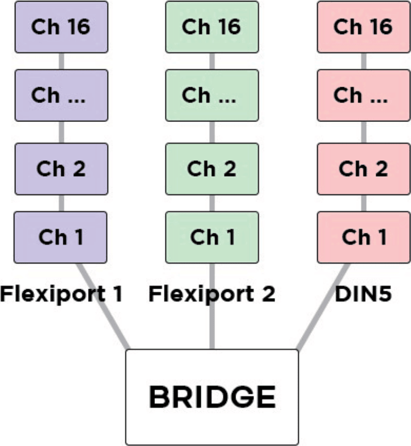
Each message can be individually tailored to go to any combination of the MIDI outputs available. When creating a message, turn the desired MIDI output/s (USB, TRS, Flexi 1, Flexi 2) ‘On’ or ‘Off’ to create different streams of MIDI messages from one switch press.
Example: Output the first 16 messages from Flexi 1, the second 16 from Flexi 2, and the third 16 from the TRS MIDI out. By using all 16 MIDI channels on each output (message 1/channel 1, message 2/channel2) this will result in 48 different devices able to be MIDI controlled by a single footswitch press with no conflicting MIDI channels.
LFOs
Low Frequency Oscillators are not just for sound waves. With MIDI messages, we can oscillate the value data at low frequencies to modulate the MIDI data automatically and create ‘moving’ MIDI messages.
For example, a TC Electronics Plethora X5 has 5 knobs which are also controllable with MIDI CCs. By applying the LFO to one of those MIDI CCs, the Bridge4 can continually (and automatically) ‘move’ that knob. Many effects units have parameters that can be controlled in this way. Almost every parameter on multi-effects units like the Line6 Helix and Fractal Audio devices can do this.
The Bridge4 LFOs can be set to activate with the Primary or Secondary switch function. This can produce a “toggle” type or “momentary” type effect (i.e. press once to turn on, press again to turn off, OR press to activate, release to stop) The LFO will oscillate all possible MIDI messages that are in the chosen MIDI message stack.
All four LFOs can be simultaneously active.
The LFOs can be linked to MIDI Clock A, MIDI Clock B, or set with an independent frequency from 0.1hz to 10hz. Min/Max value limits can be set to limit the range of oscillation, and the waveform can be changed between sine, triangle, saw, ramp, square, and random.
Adjust the steps to change the resolution of the modulation, and choose whether to reset the waveform after each stop, or pick up where the wave was paused.
With four LFOs running on a bank and flexible MIDI routing, you can oscillate more than fifty MIDI messages on each of the 100 banks! But you will have to be careful of the limitations of MIDI itself. Being such an old protocol, it takes approximately 1ms per MIDI message and can become quickly overloaded with LFO data.
If you are experiencing stuttering, try increasing the step size of the LFO and trying again.
Expression Pedals
With each Flexiport able to take an expression pedal input, or an Exp-Doubler input, you can do a lot with expression pedals on a Bridge4!
Each expression pedal can control a stack of bank messages and a stack of global messages. Each stack of 16 expression messages means you can control 32 messages per expression pedal.
Each individual message can be routed to any selection (or all) of the available MIDI outputs and can be set with min/max limits and linear, log, or anti-log interpolation curve. If you like, you can also reverse the sweep so that the lowest value will be sent at the toe-down position and the highest value at the heel-down position.
As an example, you could have an expression pedal that controls a global CC7 (volume) message, and another expression pedal that controls the tremolo depth of another effect but is limited to a range of 40%-70%. This same expression pedal could simultaneously modulate reverb size, time, and pre-delay, and perhaps also link to a low pass filter on an EQ effect.
For a truly ‘experimental’ sound, try linking 16 different parameters to one expression pedal, all with different min/max limits and sweep curves!
You can also use smart messages on a footswitch to scroll through the messages in an expression message stack one at a time or select a specific expression message. For example, you could have an Aux switch which scrolls between the 16 expression messages. 16 expression pedals for the price of one (plus a small footswitch of course).
Expression Ladder Messages
Expression ladder messages are messages that are triggered by the position of the selected expression pedal. Up to 32 messages per Flexiport, per bank can be added as well as 32 global expression ladder messages per Flexiport. This means a total of 64 messages per Flexiport can be triggered by the positions of a single expression pedal!
Use this feature to simulate a heel switch or toe switch on your expression pedal. These can be used to trigger tuners, turn effects on/off etc.
To add bank level expression ladder messages onboard the device go to:
To add global level expression ladder messages, go to:
Ladder messages are set the same way as any other message, except on the third screen there is a “trigger” setting. This is a value selected from 0-127 and represents the position of the expression pedal. 0 = heel down and 127 = toe down.
Note: If you are using the Expression Doubler on your Flexiports, these ladder messages will be tied to the 1A and 2A expression pedals and can’t be used with the 1B and 2B pedals.
Aux Switches
An Aux switch, connected to a Flexiport, can have up to 3 switches using a TRS cable. The Bridge4 can register press, toggle and hold events from an Aux Switch.
The press, toggle, and hold events can trigger one message each (including smart messages) per bank, and there is also a global setting for each message type.
This means you could use two Aux switches to add 6 more switches to your Bridge4 and each of those switches can send 8 more messages, including triggering other switches (or switch groups).
Boot Messages & Boot Delay
You can add up to 16 messages of any type that are sent as soon as your Bridge4 is turned on. This is useful for making sure your connected gear is set to a “default” or “beginning” state without having to check everything.
Set the Boot messages at:
Boot delay is a complimentary setting found on the second page of the General UI settings at:
You can increment the boot delay by 100ms from 0ms to 60000ms (60 seconds) to allow other gear to power on before the Bridge4 sends the Power-on messages.
Device Link
Connect two or more PIRATE MIDI devices via Flexiport (in Device Link mode) to enable high-speed MIDI input/output sharing, bank change sync, bank name sync, UI settings sync, and other features to come!
Want a MIDI controller with 10 switches? No problem, connect a BRIDGE4 and a Bridge4 with a TRS cable and away you go.
Device Link automatically detects what devices are connected and what their features are so you get an easy, flexible setup no matter what your combination of devices may be. See chapter 4 for full Device Link details.
8. Message Stacks
MIDI Messages Onboard
You can add MIDI messages for switch presses (per bank), expression pedals (per bank and global) but the method is essentially the same for each, you just find them in different places in the menu.
1. Footswitches
Viewing Messages on Footswitches
Enter the Menu by holding switch 1 & 3 simultaneously. Navigate to:
If the message stack is empty, you will see the following screen:
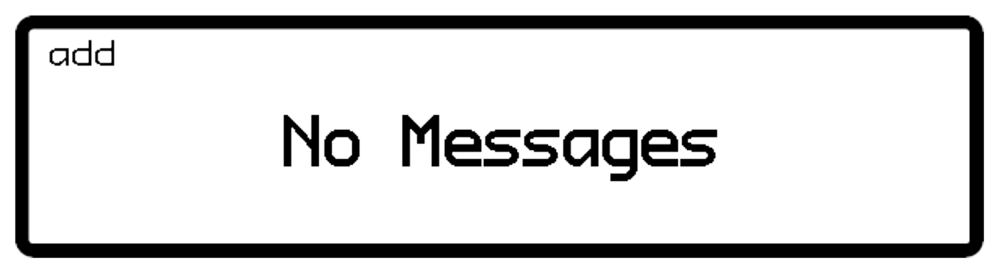
If there are already messages in the currently selected stack, the screen will look something like this:
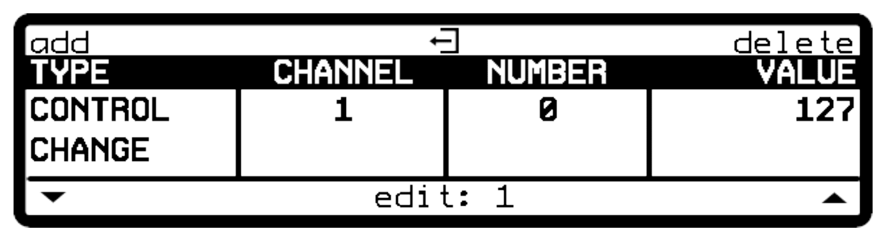
“Add”
Pressing switch 3 in this screen will allow you to add a new message to the stack. Once pressed the label on Switch 1&2 saying “edit: 1” will change to “save: 1” Press this to save the message and exit the edit menu.
“Delete”
Pressing switch 4 will delete the message you’re currently viewing in the stack. You will be asked to confirm your choice.
“Edit: ‘x’”
If there are multiple messages in the stack, you can scroll through them using switches 1 & 2. Pressing switches 1&2 together will allow you to edit the currently selected message.
The number next to the “edit” label shows which number in the stack the current message is.
Editing Messages on Footswitches
After pressing switches 1&2 to “edit” a message, the highlighted selector box will appear and switch 3 & 4 will become navigation arrows.
Switch 1 & 2 will increase/decrease/change the currently selected value.
When editing a MIDI message, you can choose:
- Message Type
- MIDI Channel
- Number (will not appear for all message types)
- Value (will not appear for all message types)
- Time (will only appear for delay messages)
- Note Number (will only appear for note on/off messages)
- Velocity (will only appear for note on/off messages)
- Outputs (Flexi1, Flexi2, TRS, USB)
When you have finished editing a message, press switches 1&2 together (save: ‘x’).
2. Expression Pedals
Viewing Messages on Expression Pedals
To view bank-level expression pedal messages, go to:
All controls are the same as on switches.
To view global expression pedal messages, go to:
All controls are the same as on switches.
Editing Messages on Expression Pedals
Editing expression messages is the same as editing switch messages. Although you will notice there are 3 screens of settings, not just 2. The third screen allows you to edit the min/max values of the expression message as well as the sweep type.
Some message types are unsuitable for expression pedals and are not available.
Min Value & Max Value
On the third screen of settings, you can set the minimum value and the maximum value that the selected message will send. By default, MIDI messages minimum is 0 and maximum is 127. Changing these values will affect the whole sweep of the pedal. For example, if you change the minimum value to 25 instead of 0, then the full heel-down position will be 25, instead of 0. Likewise with the maximum value. It will affect the full toe-down value and all values in between.
Sweep (curve)
This setting will affect the data interpolation applied to the values as you move to expression pedal from heel-down to toe-down. ‘Inverse’ sweeps (e.g. Inverse Linear) inverts the heel and toe values of the regular sweep types.
- 1. Linear
- 2. Log
- 3. Reverse Log
- 4. Inverse Linear
- 5. Inverse Log
- 6. Inverse Reverse Log
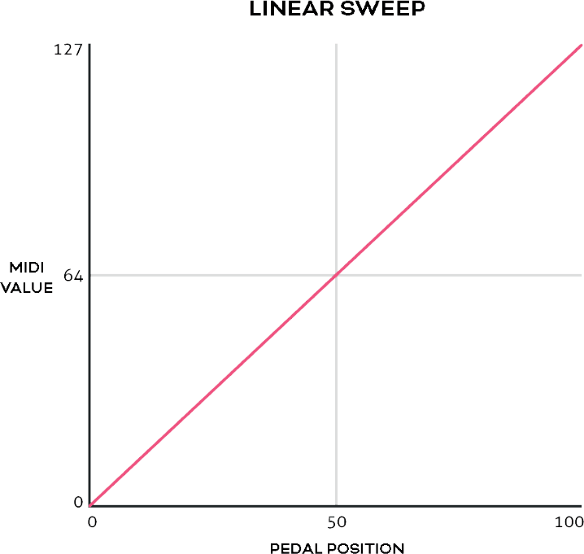
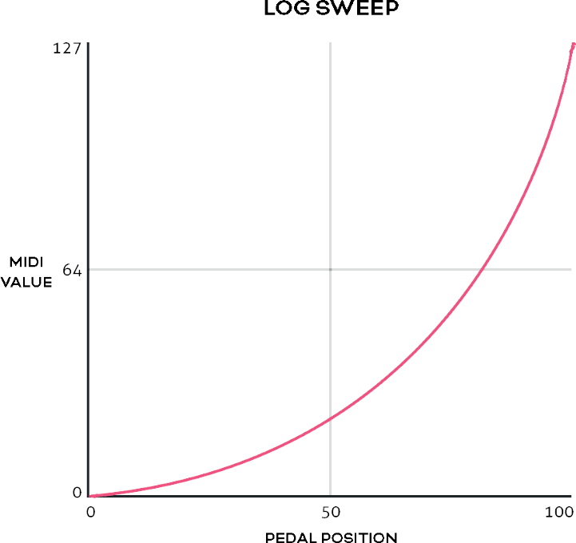
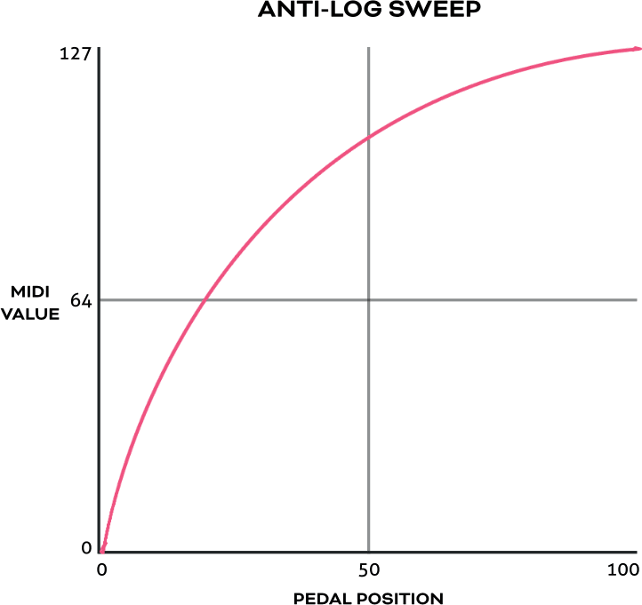
3. Bank Messages
Each bank has its own stack of 16 messages. These messages are automatically sent when that bank is selected.
To access this message stack for viewing and editing, go to:
All editing controls are the same as above.
4. Aux Switch Messages
When a Flexiport is being used in Aux switch mode, a 1, 2, or 3 button Aux Switch can be used to send a press message and a hold message at both Bank and Global Level.
To add a message to the bank level, go to:
To add a message to the global level, go to:
5. Boot Messages
A stack of 16 messages can be set to be sent immediately after the Bridge4 is powered on. To set these messages, go to:
This is useful for making sure your connected gear is set to a “default” or “beginning” state without having to check everything.
9. MIDI Clock
MIDI Clock Onboard
The Bridge4 has two onboard MIDI Clocks that can run simultaneously and independently with individual routing options.
1. Assigning MIDI Clock to a Footswitch
To assign a MIDI clock to a switch, enter the menu and go to:
Set the “PRIMARY” mode to “TAP TEMPO”
After choosing a MIDI Clock (A or B) to assign to the chosen switch, return to the main screen. Your chosen switch has a new label showing the Name (A or B) and the current tempo. The tempo label will update as you tap in a new tempo.
LED Indicators
The primary LED color and mode can also be changed in the config menu.
The primary LED will flash the current tempo. The secondary LED will be off by default. This means the clock is running but a “start” message has not yet been sent. When the Primary LED is off, a stop message has been sent.
Sending ‘Start’ & ‘Stop’ Messages
To send a ‘Start’ message, press and hold the switch. The clock does not send a Start message until you perform this hold action.
To send a stop message, press and hold the switch and the LED will turn off to indicate the state. The primary LED will keep flashing, and the clock impulses will continue to be sent (this is how MIDI clock works. For detailed information, please refer to the MIDI spec).
2. Assigning MIDI Clock Outputs
To choose which MIDI outputs each MIDI clock will be sent to, go to:
Here you can select any or all of the MIDI outputs (Flexi1, Flexi2, TRS, USB) for that clock to be sent to.
3. Preset or Inherit MIDI Clock Tempo Per Bank
You can preset the tempo for each MIDI Clock on each bank. You can also set the bank to simply inherit the tempo of the bank you’ve just changed from (works with non-linear bank changes too). To set the tempo or “inherit” setting, go to:
The “Inherit” option is found by scrolling past the highest or lowest tempo option (45-240bpm)
4. Sending MIDI Clock as Analog Tap Impulses
Some devices like the BOSS DD-20 giga delay have an external tap input designed for a tap tempo external footswitch. The Bridge4 can send MIDI clock impulses as “Tap Tempo Out” to control the tap tempo of these non-MIDI devices. To enable this, go to:
This will send analog tap tempo impulses from the Flexiport. This is linked to the footswitch assigned to that MIDI clock, so any tempo changes made on the Bridge4 are reflected in the Tap Tempo out.
5. Sending MIDI Clock as Beat Sync Pulse
Some devices like the Pocket Operator series from Teenage Engineering, or the volca series from KORG use a square wave sync pulse instead of MIDI clock to sync device tempos.
Setting the Flexiport mode to “Sync Pulse Out” will allow you to create a sync pulse linked to your choice of MIDI clock. Go to:
6. Controlling Clock Tempo with MIDI
You can set the tempo for Clock A and Clock B using external MIDI commands sent to the MIDI in or USB MIDI In of the BRIDGE controller.
Clock tempos can be adjusted using CC 73 and CC 74 as NPRN-style pairs. (NRPN is a way to extend the range of values of a MIDI CC by using two CC’s together instead of just one).
CC 73 both sets the target clock, and the tempo range. CC 74 is purely for tempo.
How does this work? Here's some examples:
- CC73 (MSB), Value = 0 : Clock A set between 45 (minimum) to 127 BPM
- CC73 (MSB): Value = 1 : Clock A set between 128 to 240 (maximum) BPM
- CC73 (MSB): Value = 2 : Clock B set between 45 (minimum bpm) to 127 BPM
- CC73 (MSB): Value = 3 : Clock B set between 128 to 240( maximum) BPM
- CC74(LSB) sets the tempo as dictated by CC73.
So for example, you send CC 73, value = 1, then CC 74, value = 12. This is targeting Clock A in the 128-240 BPM range. Starting from 128, you add the value of CC74 which gives 140BPM.
Another example: You send CC 73, value = 2, then CC 74, value = 67. This is targeting Clock B in the 45-127 BPM range. Starting from 45 as the minimum value, 67 will set the tempo to 67.
These MIDI values are also noted in the External MIDI Control table at the back of this manual.
10. LFOs
Setting LFOs
The Bridge4 has four LFOs per bank that can run simultaneously and independently with deep customisation and flexibility.
LFOs are assigned to a particular message stack on a particular switch. When active, the Primary LED becomes an indicator of the LFO, showing both frequency and wave shape with the pulsing/fading of the LED itself.
To start setting LFO parameters, go to:
Below you will find a visual representation of the three LFO settings pages.
The following headings address each of the LFO settings available on these three screens.
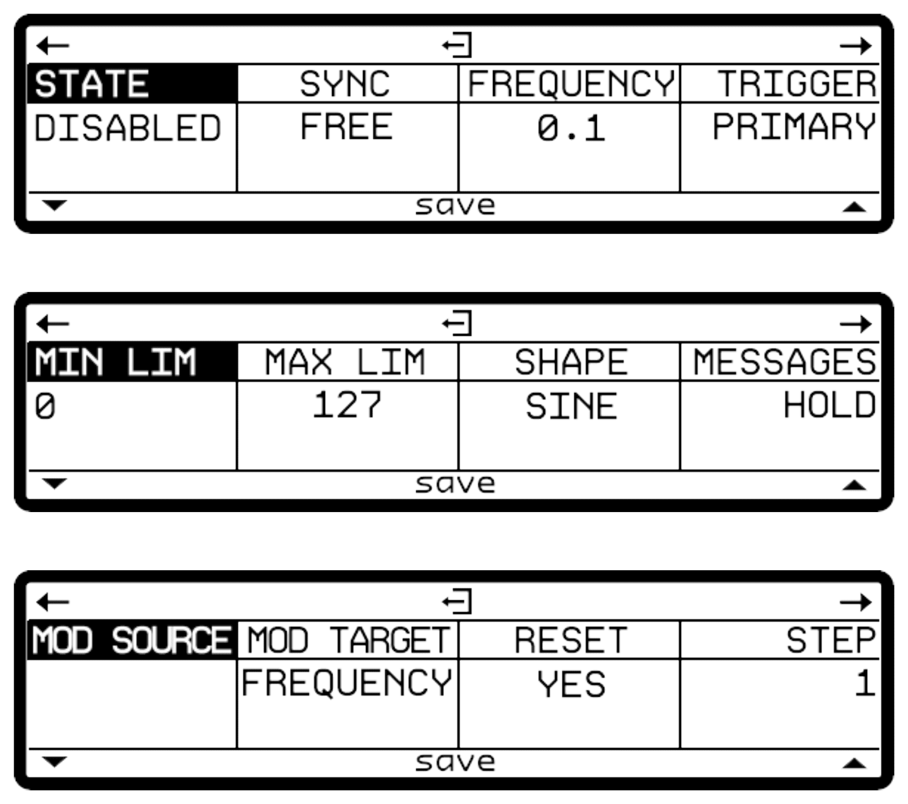
1. LFO State
Toggle this setting between on or off to activate or deactivate the LFO.
Only two LFOs can be assigned per bank. If there are already two switches in the current bank with the LFO state set to ‘on’ the Bridge4 will tell you that there are no more LFO slots available and will not turn on the LFO.
2. LFO Sync
For each LFO you choose to activate, you can set a free frequency (default) or choose to sync to MIDI clock A or MIDI clock B.
3. LFO Frequency
This sets the frequency of the oscillation from the minimum value to the maximum value. In free sync mode, this is set in Hertz (times per second). The Hz range is from 0.1Hz to 10Hz.
When synced to MIDI clock, the frequency is set as a time division of the tempo.
Available Time Divisions:
- 1/4
- 1/4t
- 1/4d
- 1/8
- 1/8t
- 1/8d
- 1/16
- 1/16t
- 1/16d
4. LFO Trigger
There are two options for triggering the LFO. Toggle or Hold.
Toggle will start the LFO after pressing the footswitch, and it will continue to run until you press the footswitch again to turn it off.
This is useful for auto-panning, auto-wah, oscillating frequencies with an EQ or other constant modulation.
Hold will run the LFO only while you hold down the footswitch.
This is useful for one-off intentional parameter changes, or for on-the-fly virtual knob twisting (press and hold to slowly turn up the MIDI-controllable gain knob on your drive pedal) or for Ramping effects like opening up a cutoff filter.
5. LFO Limits
The Min Limit and Max Limit parameters set the range that the LFO will oscillate between. If you want to limit the range of oscillation to be smaller than the full 0-127 values of a normal MIDI message, use these limits.
For example, I may use an LFO to auto-wah with an EQ, but I don’t want to cover the whole sound spectrum - I just want to oscillate in the mids to high mids. So I set the Min Limit to 60 and the Max Limit to 100. This contains the parameter I’m modulating to just the upper mid section.
6. LFO Shape (waveform)
You can choose from 6 different waveform shapes to modulate your MIDI data.
- Sine
- Triangle
- Saw
- Ramp
- Square
- Random - Set the step size. If the random value is within the step size, it will regenerate to create a new value outside the step size of the previous value generated.
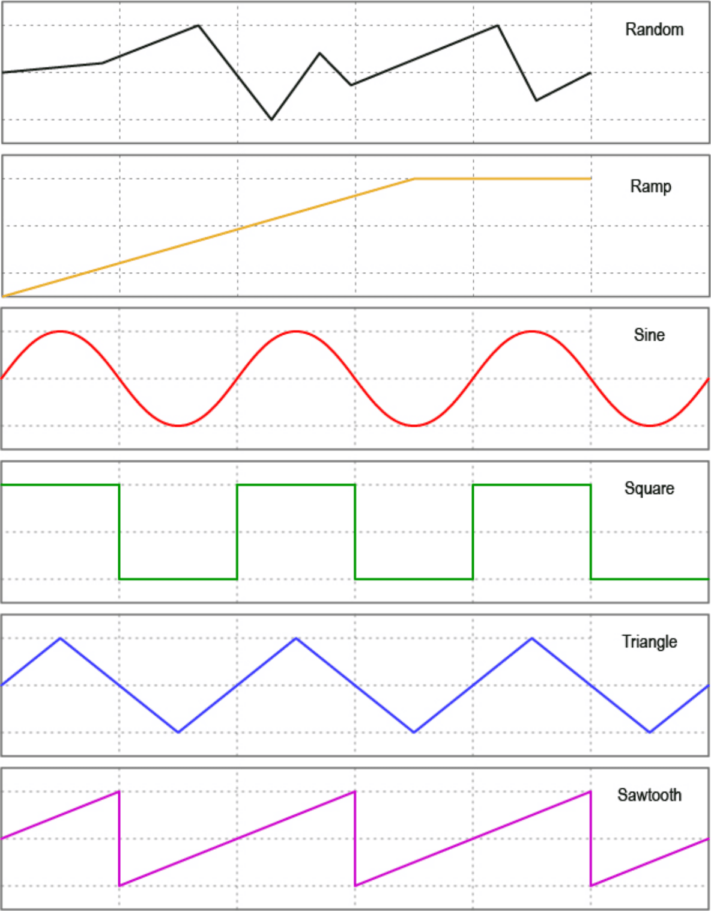
7. LFO Messages
This setting allows you to choose the message stack that the LFO will modulate. Any compatible message in this stack will be what the LFO uses to create the oscillating MIDI data.
For instance, if you choose the toggle on stack, then any messages in the toggle on stack are what the LFO will oscillate. If there are 12 MIDI CC messages in that stack, all 12 will be oscillated with the settings chosen.
8. LFO Modulation Source
Not currently active - please wait for a future update.
9. LFO Modulation Target
Not currently active - please wait for a future update.
10. LFO Reset
Choosing ‘yes’ will reset the waveform each time you start or restart the LFO. Choosing no will keep continuous data between stops.
Turning reset to ‘no’ is helpful for continually ramping parameters when using the ramp shape - rather than going back to the min value each time you activate the LFO, you can increase it gradually in multiple stages by starting and stopping the LFO a few times.
11. LFO Step
The ‘Step’ refers to how smoothly the LFO changes the data of the MIDI messages. A step of 1 means that the data will only change by +/- 1 each time. You can set the step value to 1, 2, 4, 8, 16, or 32.
Setting to a higher number may create a “stair-cased” effect because of the abrupt changes in parameter values. If you are having stuttering or slow-downs due to the amount of MIDI data being produced by the LFOs, try increasing the step size a little to reduce the amount of data that needs to be sent in one second.
12. Save & Exit
Now that you’ve chosen the settings for your LFO on this switch, press switches 1&2 to save and exit.
11. Switch Out
Setting TRS Out
PIRATE MIDI Flexiports can act as TRS switch outputs to control non-MIDI devices.
Each footswitch can send a specific Tip, Ring or Tip+Ring message for each press type. The TRS Out settings are per bank.
1. Activating TRS Out Mode
To enable TRS Out, please set your chosen Flexiport to Switch Out mode.
2. Setting TRS Out per Switch
You can link any press type on any footswitch on any bank to a single TRS switch out event.
There is no limit to the number of switches or banks that you can link to switch out events. To set these actions, add a smart message in the message stack of your choice, and choose the “TRS Switch” Message type and set the switch action you want to perform when you activate that message stack.
You can also choose which Flexiport the switch event will be sent to (you can choose any Flexiport, but it won’t work unless you’ve already set the Flexiport to Switch Out mode).
If you have a device that you want to switch with TRS events, please consult its user manual to decide what type of switch signal you need to send.
12. Aux Switch In
Setting Up Auxiliary Switches
PIRATE MIDI Flexiports can act as TRS switch inputs to offload some simple functions to external controls.
1. Activating Aux Switch In mode
To enable auxiliary switch functions, please set your chosen Flexiport to Aux Switch In mode.
2. Setting auxiliary switch messages
Single, double or triple auxiliary switches will work in Aux Switch In mode. Aux switches should be momentary switches, and use a TRS cable.
Plug your aux switch into your chosen Flexiport and then assign the functions or MIDI commands by going to the following menu for bank-level aux switch messages:
And going to the following menu for global-level messages:
Both menus allow you to set a single message for each of the press types in the list. Currently the options are Press, Hold, Toggle On, and Toggle Off.
This gives you four messages per switch, per aux switch. Then, another four messages per switch at the global level.
Press messages are sent as soon as the switch is pressed. Hold messages are sent after holding down the switch for the set hold time. Hold time can be changed along with the Aux Switch Sensitivity level in the Flexiport mode menu:
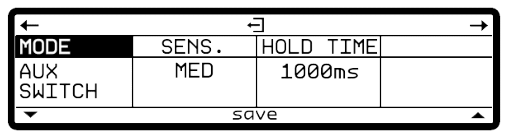
Aux Switch sensitivity is a setting designed to accommodate different brands of switches that might physically differ in the way their switches behave. The sensitivity is something you can change if you are noticing erratic behaviour of your Aux Switch.
If you have problems with a particular aux switch, you can message us or email us to get advice. It is possible that some devices will not be wired in a way that works properly with the Bridge4.
If messages are not set in the Toggle On or Toggle Off stacks, the switches and the corresponding Flexiport UI on the main screen will act in Momentary Mode. If there are Toggle messages set, then the switch and UI will act in Toggle mode.
The messages you can set include Smart Messages, so you can affect complex features like sequential messages, selecting expression messages, triggering other footswitch groups, and much more.
13. Switch Groups
Switch groups are used to activate, toggle, or deactivate switches by pressing other switches. These groups can be simple or very advanced. The default settings allow for simple exclusivity such as is needed to emulate a “snapshot” mode or where only one switch in the group should be able to be active at one time.
However, the advanced broadcast and response system lets you set up groups that interact with each other and commands that respond in very specific ways.
Accessing and Editing Switch Groups
Switch groups are bank-level settings. Switches do not interact across banks.
To access and edit the switch groups for the current bank, go to:
You will see the switch group screen as shown below. As you scroll through the 8 groups, switches that are assigned to that group will have their LED dimly lit up (either primary or secondary depending on which function is added to the group).
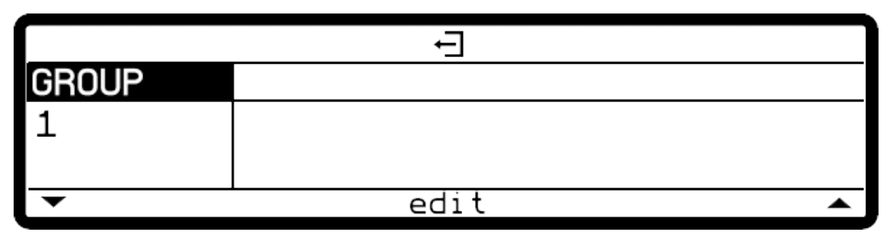
1. Navigating the switch groups
Use switches 1 & 2 to navigate through the switch groups. There are 8 switch groups per bank.
2. Editing the switch groups
Use switches 1 & 2 to navigate through the switch groups. There are 8 switch groups per bank.
To edit/add/remove the members of a switch group, press switches 1&2.
Use switches 3&4 together to add a group member. Use switch 4 to delete a group member and use switches 1&2 together to edit the settings for how a group member behaves within the group.
Below you can see an example of a switch group with members:
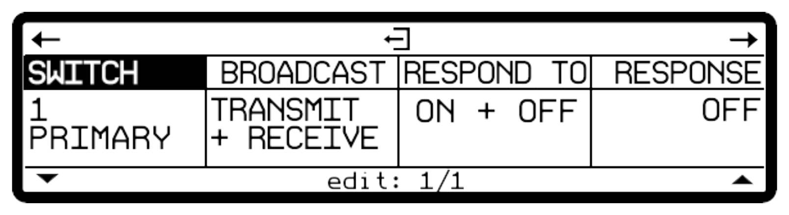
If there are no group members, you will see this screen. Press switch 3 to add the first group member.
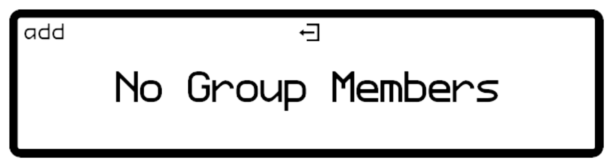
Switch
The Primary and Secondary sides of the switch can be independently controlled within a switch group. You can add switch 1-4, primary and secondary for up to 8 members per group per bank.
Broadcast
Under the “Broadcast” label, you can set the switch to Transmit only, Receive Only, or Transmit & Receive. This is regarding the switch state. In Transmit only, the switch’s state will be broadcast to the group and other switches in the group will respond according to their own settings. Receive only will only respond to received state changes from other members of the group.
Respond To
The options here are On, Off, or On & Off. This means that the switch will respond according to the Response Type (see next section) when it receives the “On” or “Off” state of another switch in the group. Whether it receives the “On” or “Off” state depends on the Broadcast setting as described above. If broadcast is set to transmit only, the switch will not be affected by other switches state changing, and these response settings will be of no consequence.
Response Type
The options here are Or, And, Toggle, On, and Off. These settings dictate the response of this group member when it responds to (see above) the state of another switch in the group which has been broadcast to the group. So, if the switch has been set to receive broadcast from other switches (via Receive only or Transmit & Receive mode), this setting dictates the response.
- OR: inverts the setting of the state it is receiving. If it receives broadcast from another switch turning off, it will turn this switch on.
- AND: mimics the state it is receiving. If it receives broadcast from another switch turning on, this switch will also turn on.
- TOGGLE: regardless of the state of the broadcasting switch, this switch will toggle its state. If it is on, it will toggle to off. If already off, it will toggle to on.
- ON: sets the switch to On when it receives a broadcast of any state.
- OFF: sets the switch to Off when it receives broadcast of any state.
Sequential Mode Switches in a Switch Group
If a switch is in Sequential Mode, you can still add it to a switch group. In this case, when a sequential switch receives an “on” message from another switch in the group, it will be activated in the same way as when the switch is physically pressed. This means the switch will still follow the same direction that has been set for that switch (forward or reverse).
Switch groups with sequential switches can also be used across devices connected using Device Link.
14. Interface - LEDs
Each switch on the Bridge4 has a pair of LEDs. The left LED is called the Primary LED and the right is called the Secondary LED. The LEDs are RGB (multi-color) and can be customised per bank in the onboard menus or the web editor.
LED Color Selection
To change the color of the primary or secondary LED, first select the bank that you want the change to affect. Then, go to:
Here you will be able to choose the color to be associated with the primary switch function, and then by navigating with switch 6 to the secondary function, you can choose the color to be associated with the secondary switch mode.
The colour of the LED will change as you navigate the list so you can see what each colour looks like. The Bridge4 comes with 11 colors, an “off” option, and the 12 custom color slots.
Note: The “Sequential” switch mode requires an extra step to change the color. This is because each step can have its own color. When editing the sequential message stack, you will be able to set the color for each step individually. Go to:
Custom LED Colors
There are 12 user-created custom color slots on the Bridge4. You can create these colors by going to:
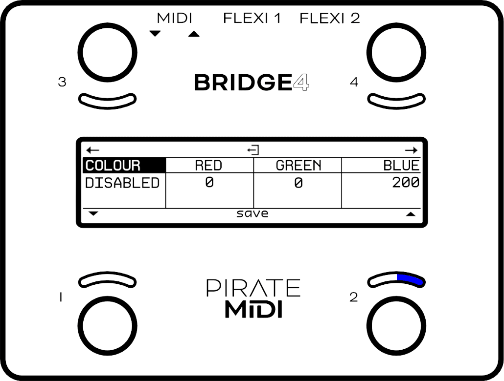
Colors are created using values from 0-200 for the Red, Green, and Blue channels. The Secondary LED on switch 2 will show the color you are currently creating with live updates as you change the R,G,B values.
If you are changing a custom color slot that already has a saved color, the saved color will appear in the primary LED position for you to compare to the new color you are creating in that slot.
LED Behaviour
Primary LEDs
This LED function is linked to the current mode of the footswitch. In Toggle mode, the Primary LED will light after a press, and then will be turned off on the second press.
In Momentary mode, the primary LED will light only when the switch is pressed.
In Tap Tempo (MIDI Clock) mode, the primary LED will be flashing to indicate the current tempo. The flash rate will update as you tap new tempos.
In Sequential mode, the primary LED will show the color of the current step. Each step can be assigned a color in the sequential message stack.
Secondary LEDs
This LED function is linked to the current mode of the footswitch. In Toggle mode, the secondary LED will light momentarily when the footswitch is held down. This helps you identify when a hold message has been triggered successfully.
If the secondary mode is set as double press toggle, the secondary LED will toggle on and off when switches are double-pressed.
In Tap Tempo (MIDI Clock) mode, the secondary LED will be lit indicating that a start message has been sent. Holding the switch will send a stop message and turn off the secondary LED.
External LED Control
LEDs can be controlled via external MIDI commands. Any changes made are not permanent, and do not change the onboard settings, they only temporarily override the LED settings.
This is useful for linking LED colors or actions with external apps like DAWs or Live Looping software.
Color Change Target
To change the colour of an LED externally, you must first target that LED by sending a value between 0 and 11 on CC 55. After you have sent the target message, messages sent on CCs 56-58 will affect the color channels (Red, Green, and Blue) of that LED to create a colour. There are also brightness controls.
See the MIDI Implementation table at the end of this manual for the specific value ranges.
LED Brightness
LED brightness can be set from 0-100% in the Global General UI settings. To change the setting onboard the device, go to:
15. Interface - Bank Names
All 100 Banks on the Bridge4 can be named individually with up to 16 Characters. Upper case, lower case, numbers, and symbols are available.
Changing the Bank Name
First, select the bank you want to change the name on. Then go to:
Here you can set up to 16 characters for the bank name using switches 1 & 2 to change the character and using switches 3 & 4 to move the cursor. Press switches 1&2 together to save and exit.
Scroll Acceleration
To help you move through the characters quickly, you can press and hold down switch 1 or 3 to scroll through the characters. The longer you hold, the faster the scroll will become until you hit the acceleration ceiling.
Inverting the Bank Name Color
The bank name section can be inverted to have a white background, and black letters. To invert the bank name colors go to:
Change Bank Numbering
Banks are numbered from 1-100 by default. If you prefer to have them numbered from 0-99, you can change it by going to:
16. Interface - UI Mode
The User Interface (UI) of the Bridge4 main screen defaults to the Standard UI but it can be changed to the Simple UI if preferred.
How to change the UI
To change the UI from Extended to Simple, go to:
Simple UI
The Simple UI uses larger text labels, and removes icons, lines, and other UI elements. Only the switch labels and bank name are visible.
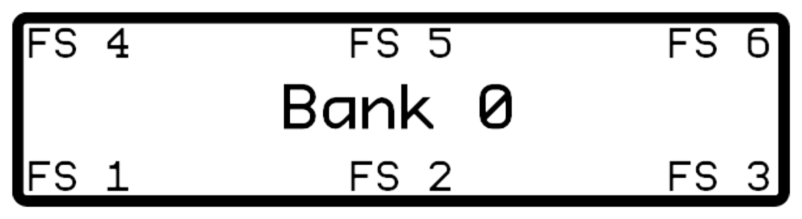
Extended UI
The Extended UI uses graphical elements to give you more information about the various features of the Bridge4.
Switch labels and bank name are still visible, but they are slightly smaller, and the bank name is left aligned. The bank up and down indicator icons are also present.
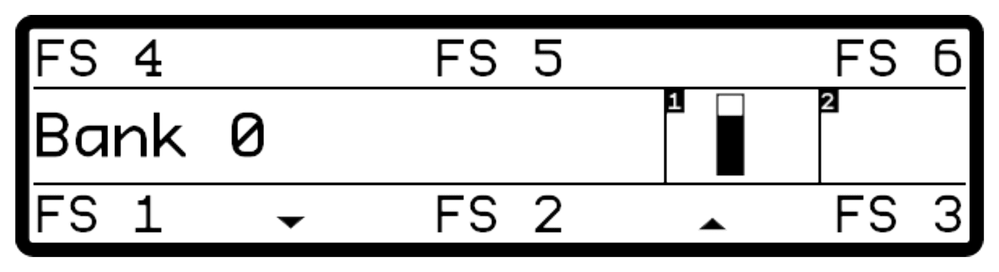
The most interesting feature of the Extended UI is the Flexiport Status section. You will notice two boxes which indicate the Flexiport mode selected.
Depending on the mode that has been selected for the Flexiports, you will be given different graphical representations and helpful information here.
- In MIDI Out mode, the box will show a letter (A, B, T, R) indicating what TRS MIDI type is being used.
- In Expression In mode, a bar graph is displayed which shows the live position of the expression pedal. As the pedal moves, so does the bar graph. This is useful for confirming correct function and calibration of the expression pedal.
- In Exp-Doubler In mode, two bar graphs are displayed to show the position of the two expression pedals in the same way as Expression In mode.
- In Tap Tempo Out mode, the time division of the clock will be displayed.
- In Aux Switch In mode, you will see 3 circles representing the 3 possible external switches. When the switch is pressed, the circle will change from an outline to a semi-filled circle. When the switch is held down, the circle will be completely filled.
- In Switch Out mode, you will see a representation of the Tip and Ring contacts labelled with “T” and “R”. These icons will invert their coloring depending on their state. When the contacts are closed, they will be filled in white, and when open they will only have white outlines.
- In Device Link mode, you will see a label indicating whether the device is in Main mode or Satellite mode. In Satellite mode, the icon will be filled in white when it detects the Main device is connected. The icon will be an outline if it is not connected.
17. Interface - Switch Labels
Each switch can be given a different name in all 100 banks on the Bridge4. These labels can be up to 8 characters. Here’s how to change them.
Changing & Customising Switch Labels
Go to:
Use switches 1 & 2 to change the characters, and switches 3 & 4 to move the cursor.
Press switches 1&2 together to save and exit.
18. Bank Navigation
Standard bank navigation is managed by pressing switches 1 & 2 together to decrease the bank number, and by pressing switches 2 & 3 to increase the bank number.
However, we’ve also included settings to change the bank change triggers, and even to change the bank trigger to a single switch instead of a combination.
To change the bank navigation triggers, go to:
Then, scroll to the second page to change the bank triggers as shown in the diagram below.
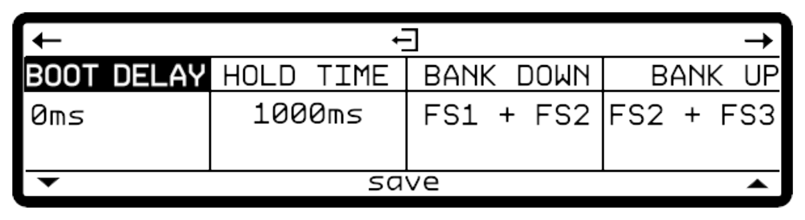
The options for bank triggers on the Bridge4 are:
- FS1 + FS2
- FS2 + FS3
- FS3 + FS4
- FS2 + FS4
- FS1, FS2, FS3, or FS4 (single)
- none
Setlists
In the web editor, you can not only drag and drop banks to rearrange them, but you can use the setlist manager to create 8 different setlists. Setlists let you drag and drop up to 32 banks into a custom order, and then using Smart Messages or external MIDI commands, you can select which setlist you want to use, and then standard “Bank up” and “Bank down” commands will progress through the setlist instead of standard bank number order.
Onboard your Bridge4, you can select and activate a setlist by pressing and holding switches 2&4 (the two rightmost switches) and then the setlist UI will appear. Use switches 1 and 2 to scroll through setlists, then press switches 1&2 together to activate it.
When inside the setlists menu, you can press switches 3&4 together to exit the setlist menu, or press and hold the same two switches to exit setlist mode completely and return to normal linear bank mode.
Editing, deleting, adjusting, and renaming setlists must all be done in the web editor at https://edit.piratemidi.com
19. Other Global Settings
Some of the fundamental global settings have already been covered at the start of this manual. If you’re looking for Flexiport settings or MIDI Thru, see Overview of Connectors, Flexiports and MIDI In/Out/Thru.
MIDI Channel
MIDI allows up to 16 channels to keep streams of messages separate. This means devices will act on messages that are only intended for that device.
When sending MIDI control messages to the Bridge4, you’ll need to make sure you’re sending messages with the correct MIDI channel. By default, the device is set to “omni” which means it will listen to all MIDI messages and act on any valid CC or PC numbers.
If you want to limit the responses, set the channel to a channel of your choice.
If you want to make sure that messages coming into the BRIDGE are passed thru, and not interpreted as BRIDGE control messages, you’ll need to change the MIDI channel of the Bridge4 to a specific number (perhaps 16?) and then make sure your other messages are not using channel 16.
Persistent Switch States
If you would like your controller to remember the states you left switches in when changing banks, you can turn these setting on or off at:
These three settings let you choose whether toggle states, scrolling switch counters, or sequential steps are saved when you exit a bank and then later return to that same bank.
This does not make a scrolling switch on one bank link to the scrolling counter on a scrolling switch on another bank.
Transmit Switch States
If you would like your controller to transmit the switch states and their messages when changing banks, you can turn this setting on or off at:
This setting allows you to automatically reset or sync your gear to a “default” or “beginning” state for each bank, without using bank messages, and so that your gear matches the default bank state of your Bridge4 every time.
Program Change (PC) Bank Output
By default, your Bridge4 will automatically send a Program Change (PC) MIDI message when you change banks. This is useful for plugging into another device like a HX Stomp and having the presets stay in sync with the banks.
The PC Outputs are turned on for all MIDI Outputs by default, and you can change the MIDI channel they send on, or turn them off entirely (per MIDI Out) at:
Switch Hold Time
To adjust the time before a “Hold” event is registered for the onboard switches, go to:
This setting can be adjusted in 10ms increments from 300ms to 2500ms (.3 sec to 2.5 sec). In the web editor, the increments are not limited to 10ms.
20. Resetting or Updating
Factory Reset
This will clear all MIDI messages stacks, reset all switch mode settings, and all global settings. Make sure you have backed up your device if you have a lot of work saved on the device.
A factory reset can also be performed by holding down FS1 during power-up. Hold the switch for 7 seconds (until the LEDs all turn white) and then release the switch.
Global Settings Reset
Global settings reset will change all global settings to default without affecting your switch modes, message stacks, or other bank level settings. To reset the global settings go to:
Updating Firmware
This user manual represents the features and settings for the firmware version marked in the footer of each page. If your device doesn’t match, this manual will be incorrect. Please update your device and download the latest user manual.
Up to date information for firmware updates can be found at www.learn.piratemidi.com/downloads/firmware-updates
The Bridge4 can be updated through the firmware updater app, or using a manual firmware update method as a last resort. Both are outlined in the webpage linked above.
Troubleshooting
If, for some reason, the update is not successful or the process is not able to start, please contact us at support@piratemidi.com
If you are not able to access the menus on your device, a factory reset can be performed by holding down FS1 during power-up. Hold the switch for 7 seconds (until the LEDs all turn white) and then release the switch.
Entering Update Mode
Manual Updates are only required as a last resort if something went wrong during the normal update process.
To enter update mode, go to:
In case of some kind of software error where you are unable to use the onboard menus, you can enter the firmware update mode manually:
- Turn off the Bridge4
- Connect a TS or TRS ¼” cable between the two Flexiports.
- Press and hold down footswitch 3
- While holding down switch 3, plug in the USB cable.
- The device will start in update (DFU) mode and then you can release the footswitch. (There will be NO lights, screen, or any indication that the device is powered, but this is normal because you have bypassed the normal startup and entered the bootloader)
21. MIDI Implementation
The Bridge4 can itself be controlled by MIDI from an external MIDI device via the dedicated MIDI In (6.35mm TRS) or USB MIDI.
You can set the MIDI channel in the menu (see Global Settings for more details):
| FUNCTION | MIDI CC# | VALUE |
|---|---|---|
| Navigation | ||
| Bank Up | 20 | Any (0-127) |
| Bank Down | 21 | Any (0-127) |
| Go to Bank ‘x’ | 22 | 0-99 |
| Go to Bank ‘x’ (PC) | PC | 0-99 |
| Menu/UI | ||
| Enter/Exit Menu | 23 | Any (0-127) |
| Change to Simple UI | 30 | 0 |
| Change to Standard UI | 30 | 127 |
| Toggle UI | 30 | 64 |
| Footswitch Action Control | ||
| Switch Off | 0-3 (FS1-FS4) | 0 |
| Switch On | 0-3 (FS1-FS4) | 127 |
| Toggle | 0-3 (FS1-FS4) | 64 |
| Press Action | 0-3 (FS1-FS4) | 3 |
| Release Action | 0-3 (FS1-FS4) | 4 |
| Double Press Action | 0-3 (FS1-FS4) | 5 |
| Hold Action | 0-3 (FS1-FS4) | 6 |
| Hold Release Action | 0-3 (FS1-FS4) | 7 |
| Sequential Increment Step | 0-3 (FS1-FS4) | 20 |
| Sequential Decrement Step | 0-3 (FS1-FS4) | 21 |
| Sequential Next Step | 0-3 (FS1-FS4) | 22 |
| Sequential Reset | 0-3 (FS1-FS4) | 23 |
| Scrolling Increment Step | 0-3 (FS1-FS4) | 30 |
| Scrolling Decrement Step | 0-3 (FS1-FS4) | 31 |
| Scrolling Next Step | 0-3 (FS1-FS4) | 32 |
| Scrolling Reset | 0-3 (FS1-FS4) | 33 |
| Reset All Sequential Switches | 80 | Any (0-127) |
| Reset All Scrolling Switches | 81 | Any (0-127) |
| All Primary Switches Off | 82 | Any (0-127) |
| All Primary Switches On | 83 | Any (0-127) |
| Toggle All Primary Switches | 84 | Any (0-127) |
| All Secondary Switches Off | 85 | Any (0-127) |
| All Secondary Switches On | 86 | Any (0-127) |
| Toggle All Secondary Switches | 87 | Any (0-127) |
| Direct Footswitch Control | ||
| Emulated Press | 10-13 (FS1-FS4) | 127 |
| Emulated Release | 10-13 (FS1-FS4) | 0 |
| LED Control | 31-38 (FS1 Primary - FS4 Secondary) | Off (0), Toggle (64), On (127) |
| LED Brightness | 43-50 (FS1 Primary - FS4 Secondary) | 0-127 |
| LED Color Change Target | 55 | 0-7 (FS1 Primary - FS4 Secondary) |
| Red Channel Intensity | 56 | 0-127 |
| Green Channel Intensity | 57 | 0-127 |
| Blue Channel Intensity | 58 | 0-127 |
| Reset Target LED Values | 59 | 0-7 (FS1 Primary - FS4 Secondary) |
| Reset All LED values | 60 | Any (0-127) |
| MIDI Clock Control (See chapter 9 for details) | ||
| Target Clock A: 45-127 BPM | 73 | 0 |
| Target Clock A: 128-240 BPM | 73 | 1 |
| Target Clock B: 45-127 BPM | 73 | 2 |
| Target Clock B: 128-240 BPM | 73 | 3 |
| Set Tempo (when targeting 45-127 BPM) | 74 | 45-127 (= 45-127 BPM) |
| Set Tempo (when targeting 128-240 BPM) | 74 | 0-127=128-240 bpm (e.g. 10 = 128+10, tempo will be 138) |
22. Support & Warranty
Thank you for purchasing a Bridge4!
If you have any questions, please feel free to contact us via support@piratemidi.com or use technical support at: www.learn.piratemidi.com
Manufacturing defects are covered by our warranty. Please contact us if your device is defective.
Australian domestic customers are covered by Australian Consumer Law which requires repair or replacement for devices that do not fulfil their advertised purpose.
International (Non-Australian) customers are covered by our own workmanship guarantee. We aim to create a satisfactory outcome for every single customer. Please contact us if you have an issue with your device.
Customer-caused damage may be repairable for a fee. We offer repair services for most components that receive damage. Contact us for details.
MADE IN AUSTRALIA